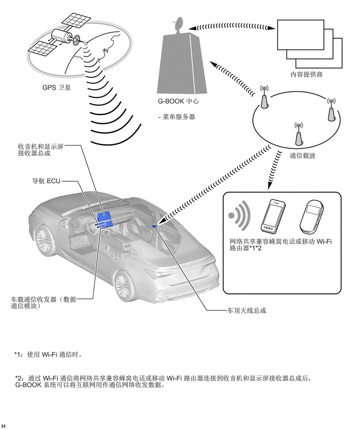

概要
配有 G-BOOK 车载通信系统。
要使用 G-BOOK 系统，需要通过车载通信收发器（数据通信模块）或 Wi-Fi 连接* 将收音机和显示屏接收器总成和导航 ECU 连接到 G-BOOK 网络（提供来自 G-BOOK 中心或内容提供商的信息）上
*：连接设定更改为 Wi-Fi 连接时，可通过网络共享兼容蜂窝电话或移动 Wi-Fi 路由器开始进行通信。
在经销商处申请服务后，用户务必遵照多功能显示屏上的说明来启用 G-BOOK 系统服务。

注意事项
如果将其他设备（如防盗或 OBD 监视设备）连接至 DLC3，则某些功能可能无法正常工作。
主要特征
G-BOOK 主要特征如下：
| 内容 | 概要 | |
|---|---|---|
|
*1：如果通过 Wi-Fi 连接了 G-BOOK，可以使用通过蓝牙连接的蜂窝电话执行话务员服务。 *2：将专门应用安装至用户手机后可用。根据车型不同某些功能可能不可用。有关详情，请联络 G-BOOK 中心。 |
||
| 紧急救援服务 | 呼叫紧急救援中心。
如有必要，则呼叫会转至救援机构、经销商或道路救援公司。 |
|
| 防盗追踪 | 自动警报通知 | G-BOOK 中心确认防盗检测系统已激活后，会通过电话或短信服务 (SMS) 通知用户。 |
| 车辆追踪服务 | 如果车辆被盗，则此服务可根据用户请求检索车辆的位置信息以便追踪。 | |
| 相关部门联系服务 | 如果用户请求，则 G-BOOK 话务员请求相关部门查找被盗车辆并妥善处理案件。 | |
| 保养通知 | 检查通知 | 根据车辆使用情况，发送电子邮件至车辆用户以通知其进行必要的检查。 |
| 检查和保养预约 | 为方便用户使用导航系统预定定期保养或维修提供快速通道。 | |
| 警告通知 | 系统故障导致警告灯点亮或组合仪表总成上显示警告时，警告通知功能将与警告有关的信息传输至 G-BOOK 中心。之后，如有可能，G-BOOK 中心发送应对警告的方法。该信息可显示在多功能显示屏上。 | |
| 话务员服务*1 | 目的地设定 | 如果用户请求，则 G-BOOK 话务员可检索信息以设定目的地。 |
| POI 引导 | 提供当前位置或目的地周边设施的 POI 信息。 | |
| 新闻和天气预报 | 根据用户要求推送新闻和天气预报信息。 | |
| 预约服务 | G-BOOK 话务员可根据用户要求预约宾馆、饭店等。 | |
| 导航系统连接功能 | G 路径检索 | 预测通往目的地路径上的交通堵塞情况或变化，并根据最新的交通信息和过去统计数据提供最合适的路径。 |
| 在网络上检索 POI | 由百度网站检索到的 POI 信息可传输到导航系统上。 | |
| 设施信息显示 | 显示网络搜索中显示在地图上的图标所指示设施的详细信息。 | |
| G 存储地点 | 使用 G-BOOK.com 或某个网站中的内容检索到的 POI 信息可存储为导航系统中的存储地点。 | |
| G 信息标记 | 在地图画面上显示 G 信息标记。 | |
| G 信息标记同步服务 | 车辆接近 G 信息标记时，将播报 G 信息标记的设施信息。 | |
| 其他功能 | 便捷信息集 | 可通过简单的操作请求新闻或天气预报信息。 |
| 遥控功能*2 | 即使在距离车辆较远的地方，用户也可接收到通知，如“任一车门解锁”和“任一车窗打开”。此外，用户可以在智能手机上检查车辆状况。 | |